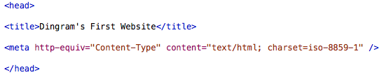

Web Site Design & Construction
The first thing on every web page should be the Document Type Definition, or DTD. This is a simple couple of lines of code which tells the browser what language your page is written in. The various standards of HTML, and XHTML, all have their own DTDs, accessible from the W3C website. For the purposes of our tutorial we are going to be using XHTML 1.0 Strict. This is mainly because it's what we've been told to develop in. However, regardless of that, it's the language I choose to develop in anyway. Purely because XHTML allows me to self-close tags (you'll understand that later) and the Strict variant removes the usage of any deprecated tags, so I'm not tempted to marquee everything.
The DTD code which you should type in to your text editor is the following:
DTD Declaration. Yes this is an image. Stop being lazy!
This will tell the browser (actually, the generic user agent) that we are using XHTML 1.0 Strict as our language. Press your carriage return key (or Enter for normal people) a few times an type in a closing HTML tag underneath (one of those looks like this: </html>
One of the things you will quickly learn when writing HTML is that to close an open tag you use a forward slash and then the tag handle. Some tags can be self-closed, such as the image tag, by putting a forward slash at the end of the tag.
The header is a subsection of the HTML tags, which means it, like all content, should be placed between the HTML tags. The open and close of the header section is denoted by opening and closing head tags. This section is used to store all of the information which isn't to be displayed on the site, such as the styling, scripting and meta data (data about the website, such as the format of the content). Also in the header is the title, this is what will be displayed in the top of the browser to identify the page.
As previously mentioned, the header is declared by head tags and the title is instantiated by title tags, as shown in the image below. Also in that image is the character set declaration, in the meta tag. Go ahead and input them into your text editor. Give your website a nice snazzy name as well, I'm naming mine "Dingram's First Website" because I'm original.
Header Example. Simple yet necessary. 
The header section will also contain our CSS code when we get on to writing it. Well, it will contain the code briefly.
Now comes the big section. The bread and butter of our web development. The body. This is the big sexy part of our website, where all of the information to be displayed is going to go. Now, we're going to do some stuff here which will serve no purpose initially, but in the long run it will be beneficial to the site.
The body, much like the header (and everything else in web development, if I'm honest with you), is contained in tags. Unsurprisingly these tags are called body tags. They're formatted as below.
Body Example. There's no content yet.
And there we have it, the final layout of our basic HTML document. We have our head and body sections, encompassed by HTML tags. At the moment there is no content in this page, and if you loaded it into a web browser you would get a blank page with a title. That is all.
Next »Now, make sure you save your document as "index.html", this is because it is your homepage, and most web servers will automatically search for a page called "index.html" and assume it is your homepage. Click the button to continue.